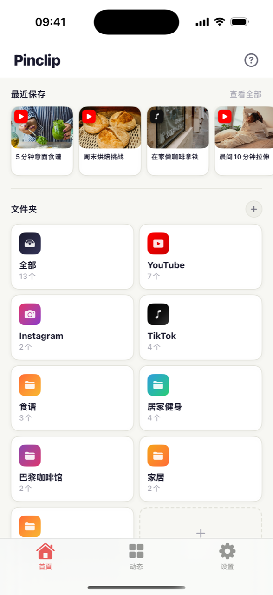
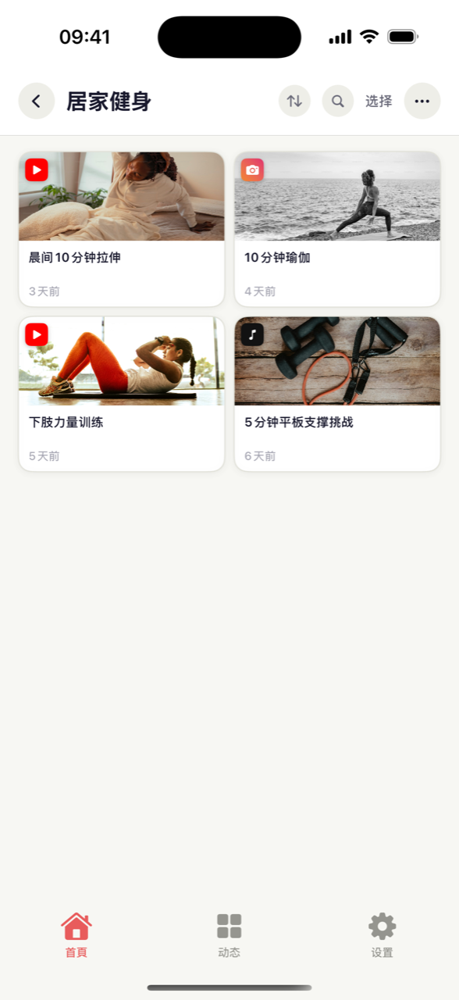
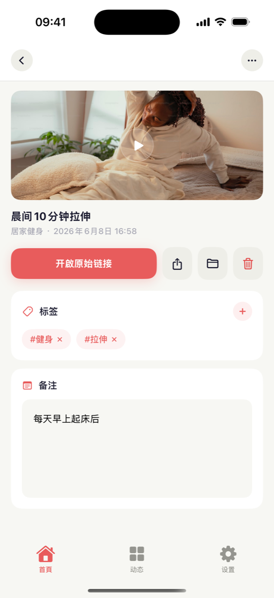
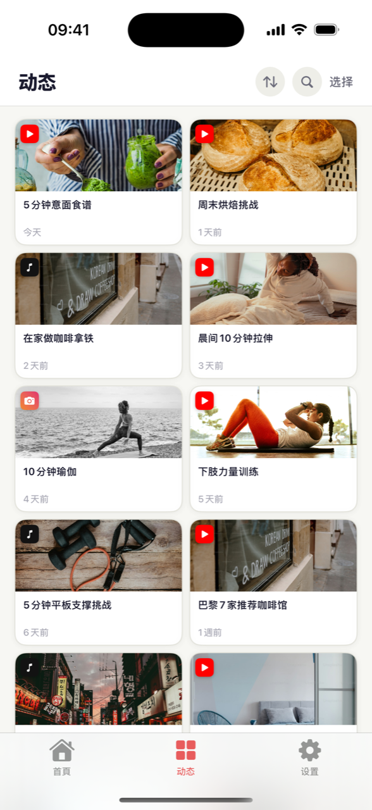

刷 Shorts 或 Reels 时想着“以后再看”的视频，真要找的时候就不见了。Pinclip 就是放这些视频的收藏箱。在视频上点分享按钮，选 Pinclip，就这么简单 — 标题和预览图自动加上，所有视频整整齐齐地放进文件夹。

在 YouTube、Instagram 或 TikTok 看到喜欢的视频，点下面的分享（箭头）按钮，选 Pinclip。完全不用离开正在看的应用。
它会自动抓取视频的标题和预览图。你什么都不用打字，收藏箱看起来就像相册一样，一眼就能认出来。
建几个像“做饭”“健身”这样的文件夹，把视频放进去。再加上标签和备注，连当初为什么收藏都不会忘。
“上周看的那条意面视频……”标题和频道都想不起来，太常见了。在 Pinclip 里，打开文件夹或点一下标签就出来了。像这样：
不管视频来自哪个应用，保存方法都一样。YouTube 和 TikTok 的视频连标题和预览图都自动填好，所有收藏都能在同一个收藏箱里搜索。
辛苦整理的“巴黎咖啡馆”文件夹，只有自己看太可惜了。把文件夹变成链接发出去，朋友不用装应用，在浏览器里就能直接看。如果朋友也在用 Pinclip，还能把整个文件夹导入自己的收藏箱。



不用关掉 YouTube、Instagram 或 TikTok。分享按钮 → Pinclip，点两下就回去继续看。
把常看的文件夹或视频放到手机主屏幕上。解锁后点一下，视频就开始播了。
用 Pro 的话，iPhone 上存的视频也会出现在 iPad 上。通过你自己的 iCloud 同步，更放心。
点一下保存的视频，就会直接打开 YouTube、Instagram 或 TikTok 上的原视频。再看一遍只要一下。
来自 YouTube 的、来自 TikTok 的，Pinclip 自动帮你分好类。什么都不用做，就按平台整理好了。
给视频加上 #做饭 这样的标签，写一句为什么收藏。以后点一下标签，相关视频全都出来。